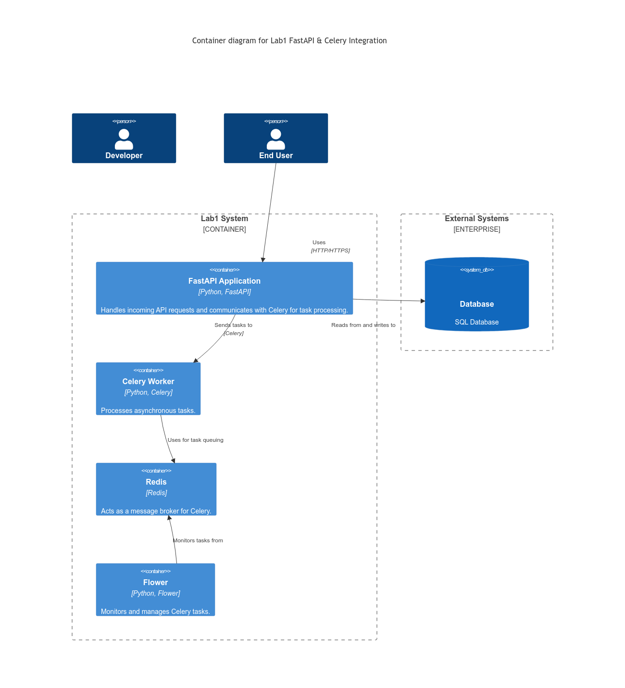
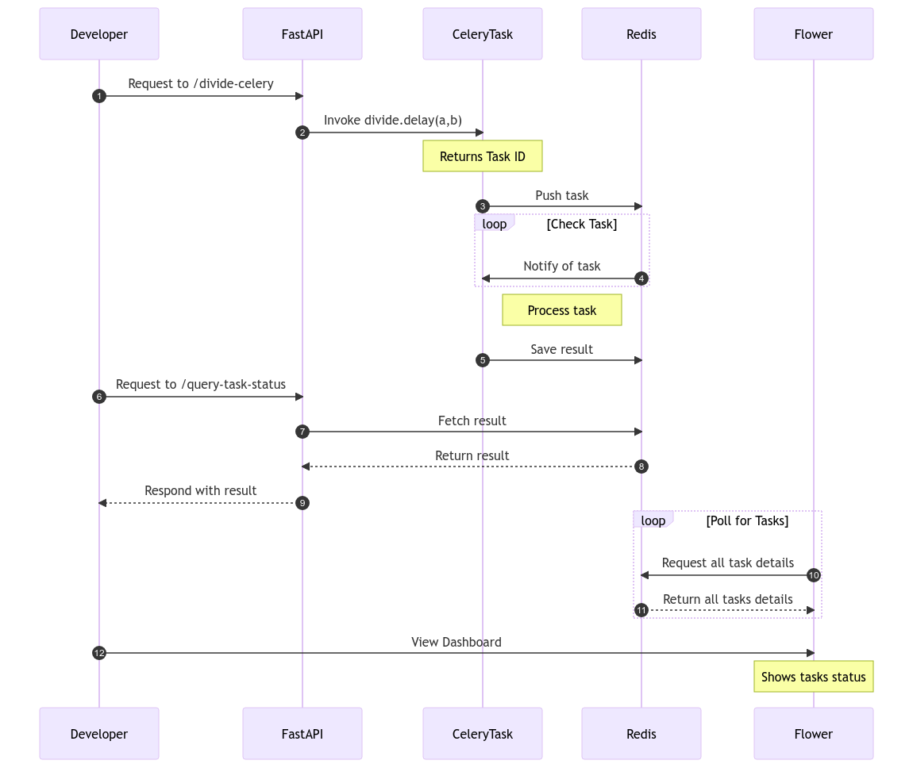

Lab 1: FastAPI Integration with Celery and Redis¶
The objective of this lab is to demonstrate a basic integration of FastAPI with Celery and Redis for asynchronous task execution.
Designs¶
Container Design¶

FLow Diagram¶

Prerequisites¶
- Docker
- Docker Compose
Project Structure¶
.
├── docker-compose.yaml
├── main.py
├── Dockerfile.dev
├── .env.dev
├── README.MD
├── scripts/start_flower.sh
└── requirements.txt
Description¶
main.py: Contains the definition of a basic FastAPI API and a Celery task nameddivide.Dockerfile.dev: Specifies how to build the Docker image for the FastAPI application and the Celery worker..env.dev: Configuration file that defines the environment variables used inmain.py.docker-compose.yaml: Defines the necessary services to run the application and the Celery task.scripts/start_flower.sh: Has a code to start the flower container.
Steps to Run the Lab¶
- Build and run services with Docker Compose
- Access the FastAPI API
Once the services are up and running, you can access the FastAPI API at http://localhost:8010.
- Trigger a Celery Task
You can invoke the divide task by making a GET request to the /divide-celery route with parameters a and b. For example:
The API will respond with a task_id which you can use to query the status and result of the task.
- Query the status of a task
Use the /query-task-status route with the task_id obtained from the previous step to check the status and result of the task:
Flower¶
Flower is a real-time web application monitoring and administration tool for Celery. Navigate to http://localhost:5550 in your browser of choice to view the dashboard. Click “Tasks” in the nav bar at the top to view the finished tasks.
Conclusion¶
This lab showcases how to integrate FastAPI, Celery, and Redis for executing tasks asynchronously. It provides a foundation upon which more advanced and complex labs can be built.